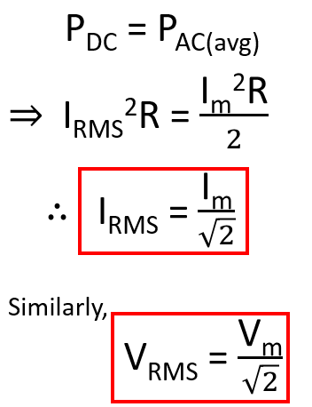

HOME BLOG EBOOKS ABOUT CONTACT SHOP
For a long time, AC was thought to be a useless form of electricity, primarily because its average value is zero over the full cycle, but experiments showed otherwise. When an AC current is passed through a wire, the wire gradually heated up, showing that power is being delivered. How is that possible?? It’s possible because both Voltage and Current are changing direction simultaneously and power being the product of these 2 quantities, power is always delivered. Consider this ridiculous example, say someone punched in your face, then he decides to you punch on the back of your head, but if you turn around at the exact moment, you’ll once again be punched in the face. So as long as both you and the attacker moves simultaneously, all the punches are delivered at the same place, your face (Ouchh!). Similarly as long as both current and voltage have same direction, their product is always positive, hence the power is always delivered.
The electrons are forced to switch direction ever so quickly that they practically remain still and yet power is being delivered by them. Getting an intuitive feel of how AC power is delivered is not the easiest of tasks, but a water analogy might help. When you throw a rock into a pond, the ripples formed will travel throughout the pond causing leaves and other debris to oscillate on the water’s surface. This means that energy has been transferred from the rock to the floating leaves, even though no single water molecule has actually travelled all the way from the rock’s impact point to the floating debris. The energy is carried by the waves formed on the water’s surface, in which chains of water molecules push and pull on each other in succession, transferring energy without actually moving anyone around.
By now it should be pretty clear that average value is not the most effective parameter to measure AC. So we need a better parameter to quantity AC, it is called the RMS or Root Mean Square value. It is developed by comparing the heating effect caused by DC and AC sources. The RMS value of AC current is the magnitude of DC current which need to be passed through a resistor, so as to produce same heat as the AC, for the same duration of time. Say we pass an AC current through a resistor for 1 minute and measure its temperature and it’s found to be say 100°C. Now if we connect a DC source to the same resistor for the same duration of 1 minute and the temperature is raised to 100°C. Then, that value of DC current gives the RMS value of the AC current.

Hence the RMS value of AC (sine wave) is 1/√2 or 0.707 times the maximum value. When you measure the voltage of your power socket, the reading indicates the RMS value. Unless specifically mentioned, all values related to AC voltages and currents are RMS values.